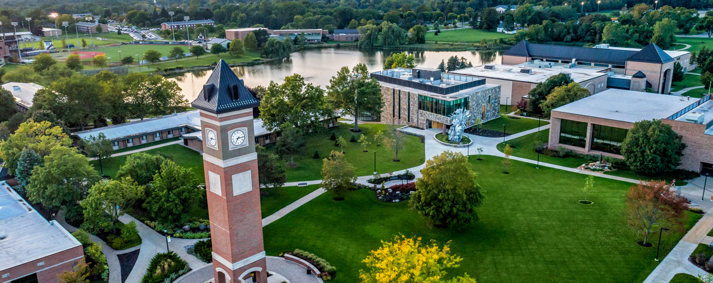
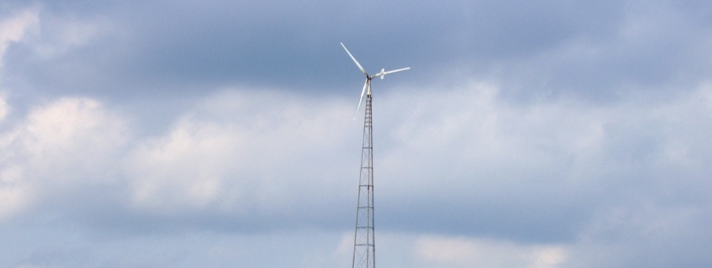

College Graduation
Anticipated Graduation: May 7, 2022
I will be graduating from Cornerstone University with a Bachelor's degree in Interdisciplinary Engineering with an Environmental Focus. As of Spring 2022, I have a 3.20 GPA.
Some of my favorite classes so far have been Environmental Engineering (EGR-437), Field Biology (ECO-342), Machine Design (EGR-309), and Alternative Energy Solutions (EGR-463).
Senior Capstone Project: Wind Turbine
Currently being built...
There was no assigned project manager for the group, however I was in charge of the electrical systems
Our goal was to build a renewable energy system that would be small enough for personal use and budget-friendly. After gathering some wind data for Grand Rapids, MI, we decided that a good target power production would be 1000W.
Environmental Engineering Project: Founders Brewing Co.
Grand Rapids, MI

This project consisted of a full overview of the brewing process. The goal was to find ways to both make the process less water-dependent and to raise the quality of the wastewater to put less strain on the Plainfield Wastewater Treatment Plant.